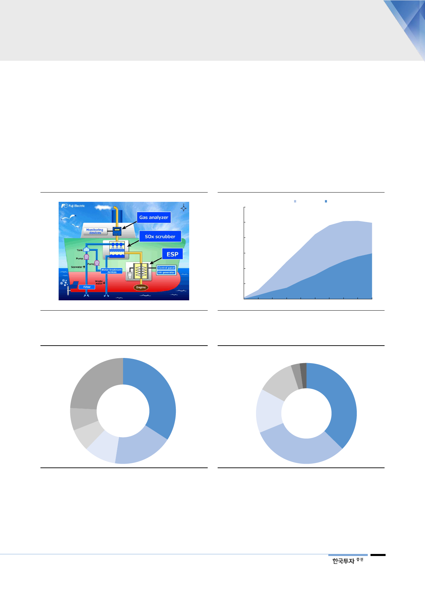

스크러버를 장착한 조선은
비용 경쟁력에서 30% 우위
2. 저유황유 스프레드 확대로 스크러버 호황 이어진다
미국 컨설팅회사인 포텐앤드파트너스는 스크러버를 설치한 VLCC(초대형유조선)
의 원유 수송 비용은 설치하지 않은 선박에 비해 30%의 비용 우위를 가진다고
전망했다. 중동-극동항로의 VLCC 운임을 비교시 스크러버 설치 선박이 t당
11.14달러, 설치하지 않은 선박이 t당 14.87달러로 33%나 차이가 난다는 계산
이다. 따라서 대형 선박 중에서 연령이 15년 이내인 구조와 새롭게 발주되는 신
조 입장에서는 스크러버의 설치 효용성이 가장 높다.
[그림 6] EGCS 구조
자료: Fuji Electric
[그림 7] 스크러버 시장 전망
(척)
3,000
개조선
2,500
2,000
1,500
1,000
500
0
2017
2019
2021
자료: Clarksons, DNV-GL, 한국투자증권
신조선
2023
2025
[그림 8] 탱커 연령별 선박 비중
31년 이상,
2,523척(24.1%)
10년 이하,
3,571척(34.1%)
26~30년,
720척(6.9%)
21~25년,
714척(6.8%) 16~20년,
1,022척(9.8%)
11~15년,
1,920척(18.3%)
[그림 9] 컨테이너선의 연령별 선박 비중
26~30년,
149척(2.8%)
31년 이상,
113척(2.2%)
21~25년,
635척(12.1%)
16~20년,
742척(14.1%)
10년 이하,
1,963 척(37.4%)
11~15년,
1,650 척(31.4%)
주: 2018년 8월 기준
자료: Clarksons, 한국투자증권
주: 2018년 8월 기준
자료: Clarksons, 한국투자증권
전세계 제조업체들의 풀
캐파 생산을 가정해도
스크러버 시장은 공급 부족
최근 유가 급등과 저유황유 스프레드가 점차 벌어질 것으로 예상됨에 따라 기존
에 저유황유 사용을 주장하던 선주들이 스크러버 사용을 적극적으로 검토 중이다.
현재까지 전세계에 스크러버를 설치한 선박은 약 1,000척 정도로 3% 수준에 불과
하다. 바르질라, 알파라발, 클린마린 등 글로벌 스크러버 제조업체들의 연간 제작
캐파가 100대 수준이라는 점을 고려하면 제도가 본격 시행되는 2020년까지 전세
7